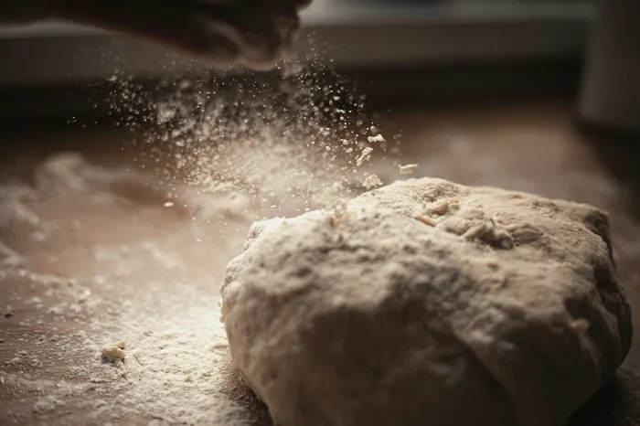
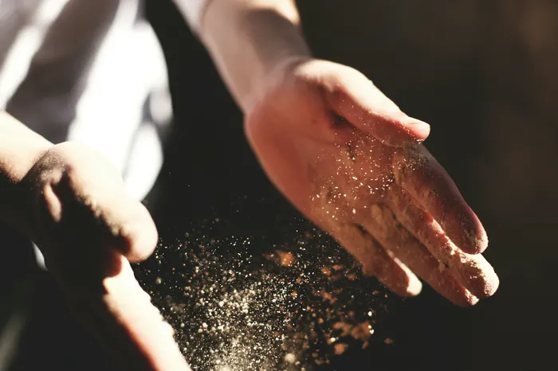
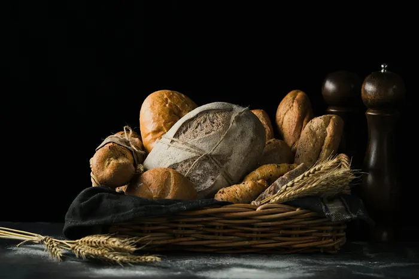
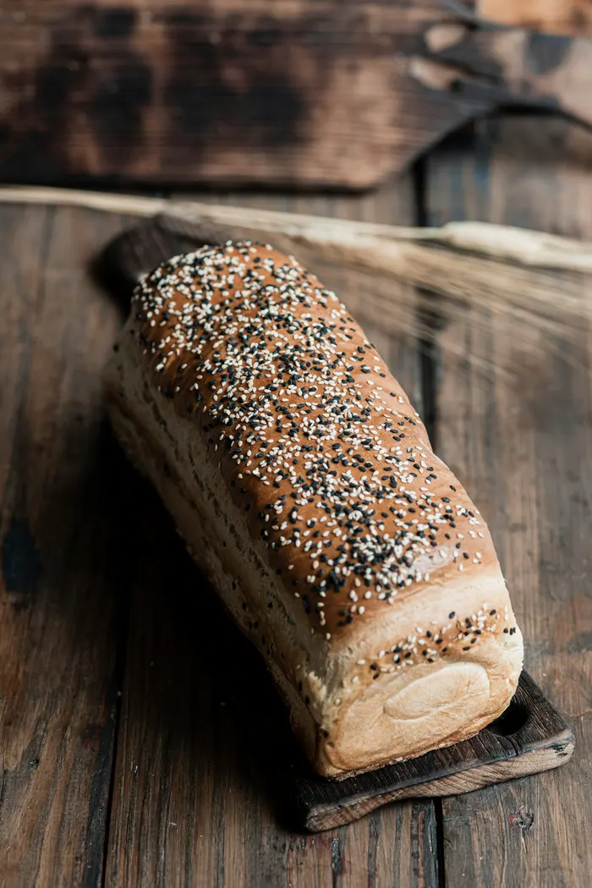
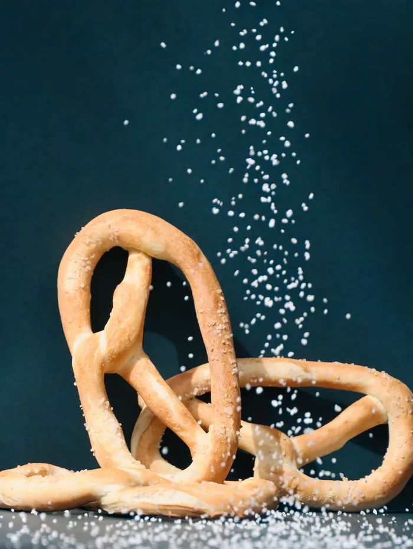
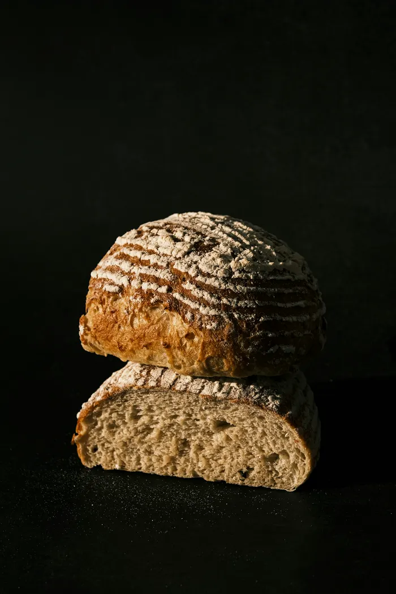
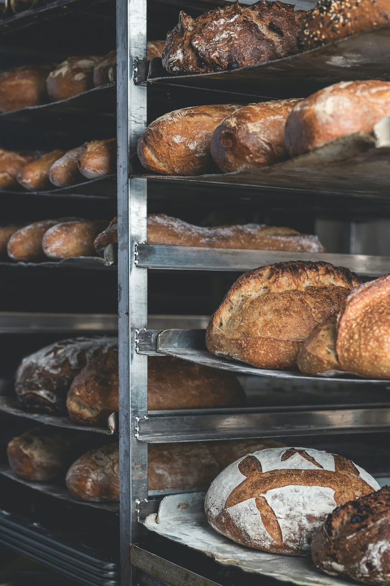

Bevor Wien aufwacht, backen wir.
Krume ist eine Bäckerei in Neubau. Sauerteigbrot und Semmeln, jeden Morgen ab 6:30 frisch aus dem Ofen.
Für morgen vorbestellen- Der Teig ruht.
- Der Ofen glüht.
- Die Kruste singt.
- Wir sperren auf.
Teig, Zeit, Ofen.
Mehr braucht ein gutes Brot nicht. Dafür machen wir es jede Nacht gleich sorgfältig, von Hand, in einer Backstube mit einem Ofen.
- 4 Zutaten
- Mehl, Wasser, Salz und Sauerteig
- 18 Stunden
- reift der Teig, bevor er gebacken wird
- 5:30
- geht der erste Schub in den Ofen
- 250 °C
- braucht die Kruste, damit sie singt

Teig
Wir mischen am Nachmittag, mit der Hand und mit Geduld.

Zeit
Der Sauerteig reift über Nacht. Zeit ist die Zutat, die man am Ende schmeckt.
Ofen
Wenn wir um halb sieben aufsperren, ist die Kruste noch warm.
Brot des Tages
Was um sieben in der Vitrine liegt. Was aus ist, ist aus, morgen backen wir wieder.
-

-

-

-


Wir sperren auf.
Neubau, 1070 Wien
fünf Minuten vom Siebensternplatz
- Dienstag bis Samstag
- 6:30 – 14:00
- Sonntag
- 7:00 – 11:00
- Montag
- Ruhetag